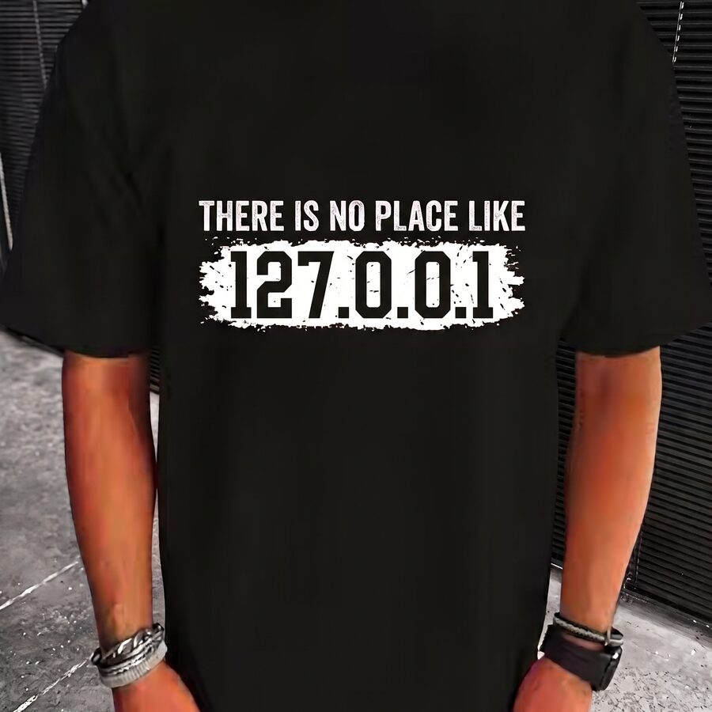
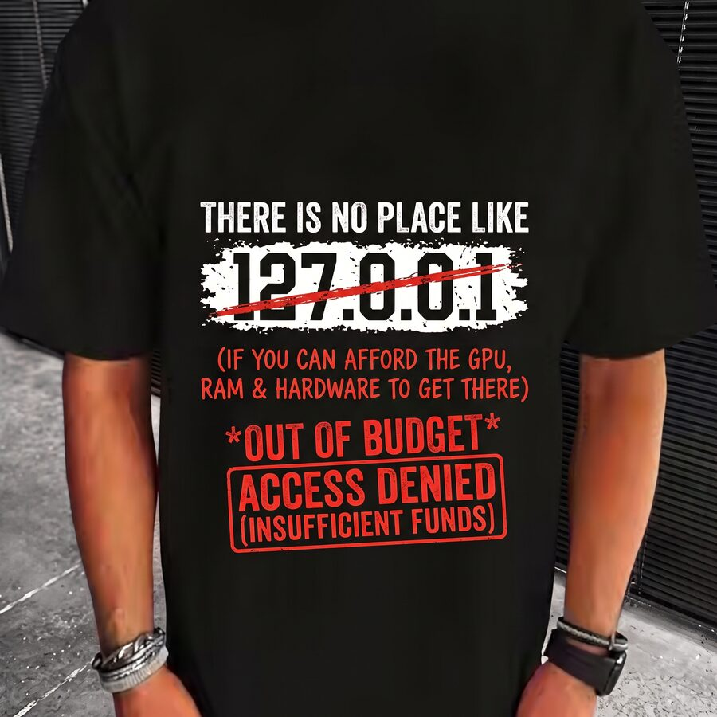
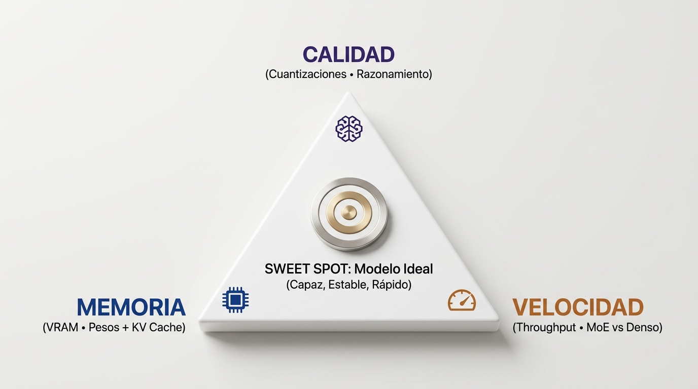
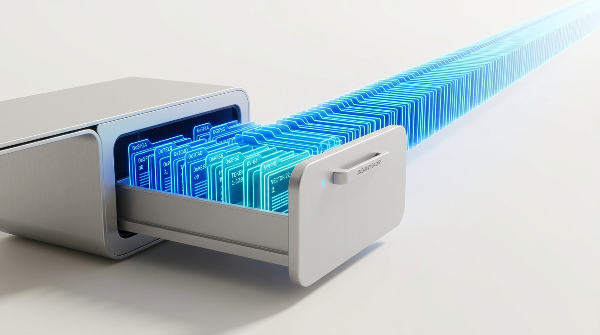
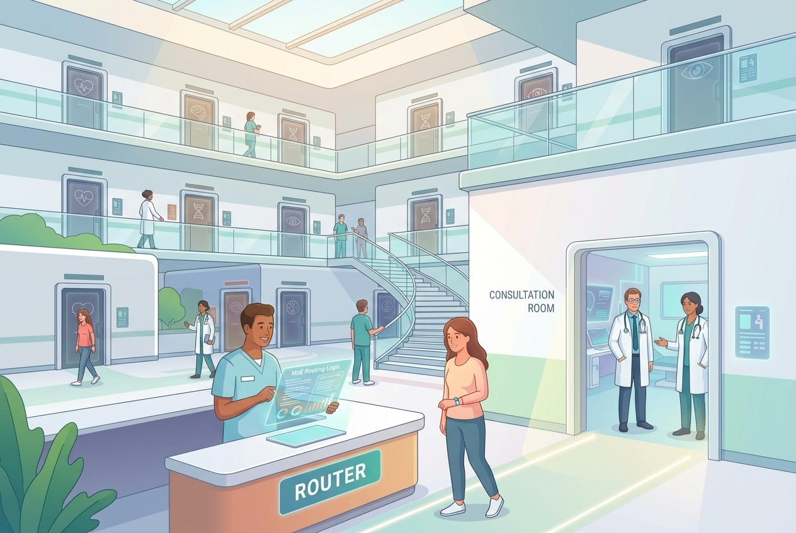
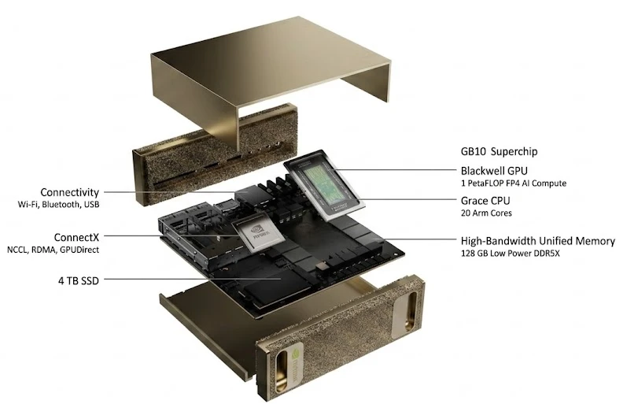

Crear Software en
la Era de los Pesos Abiertos
Ejecuta modelos de lenguaje abiertos donde tú decidas — tu portátil, una GPU alquilada o tu propia caja — con privacidad y control total. Dueño del modelo, no del silicio.
El Fin del
Bufé Libre
La fase de adquisición masiva subvencionada por capital riesgo ha terminado. Creada la dependencia en el flujo diario de los desarrolladores, llega el despertar de la factura real.
El choque de precios en los medios
Planes internos filtrados detallan la duplicación progresiva del precio de la suscripción Plus para compensar la factura masiva de servidores.
Fragmentación del mercado: las funciones potentes de razonamiento profundo y agentes autónomos se desplazan a tramos de 229 € a 275 € mensuales.
200 dólares al mes dan acceso a 14.000 $ en tokens reales. La llegada de agentes autónomos obliga a cerrar el grifo de las tarifas planas ilimitadas.
La fase de adquisición subvencionada por fondos de inversión ha terminado; las plataformas recortan el plan básico y cobran recargos por cada tarea pesada.
Especial GitHub Copilot: La crisis de los Refunds
La eliminación unilateral de la tarifa plana ilimitada provocó acusaciones de bait-and-switch, cancelaciones masivas y disputas bancarias.
La dirección de GitHub se ve obligada a publicar aclaraciones oficiales sobre los límites por créditos y a habilitar el reembolso prorrateado para calmar las bajas.
Hilos con miles de votos organizando disputas en PayPal y tarjetas por bait-and-switch tras la degradación automática a modelos básicos en 2-3 días.
Crónica del colapso del modelo económico de suscripción fija tras la llegada de agentes autónomos y la frustración masiva en la comunidad de software.
Suscriptores anuales denuncian la introducción de AI Credits con multiplicadores abusivos que reducen el valor útil a menos de un tercio a mitad de contrato.
Modelos Cloud: Occidentales vs. Asiáticos
Comparativa de proveedores SaaS: coste per-token, privacidad, cuotas y riesgo de bloqueo.
Tu Infraestructura: Alquilar o Poseer
Dos maneras de ejecutar modelos abiertos con control total y sin peaje por token. Con el silicio en fiebre, la compra ya no es la puerta de entrada universal: se paga por uso o se posee la caja.


Datos de mercado · corte Oct 2026 · 1 USD ≈ 0,92 € · hardware 128 GB+
El choque de precios II: la caja se disparó
| Equipo | Configuración | Evolución de precio | Δ | Estado (Oct 2026) |
|---|---|---|---|---|
| Framework Desktop | 128 GB unificada | $1.999 → $2.459 → $3.449 | +72% | 🔴 Agotado en tienda |
| NVIDIA DGX Spark | GB10 · 128 GB | $3.999 → $4.699 → $6.950 | +74% | 🔴 Agotado en canal |
| NVIDIA DGX Spark | GB10 · 64 GB (recorte) | anuncio: $4.999 | +25% vs. 128 GB orig. | 🟡 Anunciado 23 Oct |
| Bosgame M5 / MS-S1 Max | Strix Halo · 128 GB | $2.899 → $3.099 – $3.799 | +7 – 31% | 🟡 Stock fugaz |
| GMKtec EVO-X2 | Strix Halo · 128 GB | — | — | 🔴 Agotado (todas) |
| Apple Mac Studio | M5 Max · 128 GB | $5.099 | +$1.600 por 64 GB ($25/GB) | 🟢 Disponible |
| Apple Mac Studio | M5 Ultra · 256 GB | $9.499 | — | 🟢 Disponible |
| Gorgon Halo | AI Max+ Pro 495 · 192 GB | $6.799 | — | 🟢 Escalón de entrada 192 GB |
La promesa de amortizar una caja de $2.000 se convirtió en un ticket de entrada de $5.000–7.000, con roturas de stock sistemáticas y 25 $ por cada GB de memoria. La IA local dejó de ser la puerta de entrada para todo el mundo.
Precios verificados el 19 sep 2026 · 1 USD ≈ 0,92 €
Costes de Inferencia por 1M de Tokens
| Proveedor | Modelo | Entrada ($ / €) | Entrada con Caché | Tipo / Categoría |
|---|---|---|---|---|
| OpenAI | GPT-5.6 Sol / o3 | $4.00 / 3,68 € | $0.40 / 0,37 € | Frontier Flagship |
| Anthropic | Claude Sonnet 5 | $3.00 / 2,76 € | $0.30 / 0,28 € | Gama Media / Agentes |
| Gemini 3.6 Flash | $0.75 / 0,69 € | $0.075 / 0,07 € | Equilibrado Cloud | |
| xAI | Grok 4.6 | $2.00 / 1,84 € | $0.50 / 0,46 € | Frontier Multimodal |
| DeepSeek | DeepSeek V4 Flash / R1 | $0.14 – $0.66 | $0.003 / 0,003 € | Open-Weight MoE |
| Alibaba Qwen | Qwen 3.8 27B | $0.10 – $0.45 | ≈ $0.05 / 0,05 € | Open-Weight Eficiente |
| Alibaba Qwen | Qwen 3.8 Flash Next | $0.15 / 0,14 € | $0.075 / 0,07 € | Open-Weight MoE Ligero |
| Zhipu (Z.ai) | GLM 5.3 Flash | $0.15 / 0,14 € | $0.03 / 0,03 € | Open-Weight Agéntico |
| AI Local Crafters | Hardware Propio (GGUF / vLLM) | 0,00 € / token | Ilimitado | 100% Privado & Autónomo |
Tarifas H200 verificadas el 19 sep 2026 · DeepInfra · Vast.ai · Latitude.sh
La salida honesta: alquilar GPUs para pesos abiertos
Con pesos abiertos, el runtime es fungible: los mismos modelos que correrían en tu caja, por horas y sin que un tercero lea tus prompts (instancia dedicada).
El Trilema de la IA Local: Memoria, Calidad y Velocidad
Toda decisión de hardware, arquitectura y cuantización busca el equilibrio perfecto entre estos tres pilares.

Si el modelo y el contexto no caben en VRAM, la velocidad cae un 90% por swap a memoria de la CPU.
Comprimir a 4 bits ahorra VRAM; la clave es preservar intactas las cadenas de razonamiento complejo.
La arquitectura MoE activa solo a los expertos necesarios para responder en tiempo real.
¿En qué se gasta la Memoria? Pesos vs. KV Cache
El tamaño del modelo es solo la base fija: cada conversación activa y documento devora memoria dinámica token a token.
--kv-cache-dtype fp8 en vLLM duplicas los usuarios sin precisión perceptible.
El Peaje de Comprimir: ¿Cuánta Inteligencia se Pierde?
Impacto real de la cuantización en razonamiento y código: de FP8 (fidelidad intacta) al colapso sintáctico de 3 bits. Altura de barra = VRAM que ocupa; línea = calidad que sobrevive.
| Formato | VRAM (122B) | Retención Global | MMLU (Razonamiento) | HumanEval (Código) | Diagnóstico |
|---|---|---|---|---|---|
| BF16 / FP16 (Base) | ~244 GB |
|
88.4% | 84.5% | 💎 Original (Inviable en 1 GPU) |
| FP8 (Hopper / Blackwell) | ~122 GB |
|
88.2% (-0.2%) | 84.3% (-0.2%) | ✨ Máxima Fidelidad (Datacenter) |
| AutoRound INT4 (Intel) | ~69 GB |
|
87.2% (-1.2%) | 83.1% (-1.4%) | 🌟 Sweet Spot MoE (Estaciones 128GB) |
| NVFP4 (NVIDIA Blackwell) | ~65 GB |
|
87.0% (-1.4%) | 82.8% (-1.7%) | 🚀 Aceleración Nativa Tensor Core |
| GGUF Q4_K_M (imatrix) | ~69 GB |
|
85.9% (-2.5%) | 81.2% (-3.3%) | ⚙ Estándar Local en Ollama / Mac |
| INT3 / Q3_K_M (Extremo) | ~52 GB |
|
78.5% (-9.9%) | 71.0% (-13.5%) | ❌ Inutilizable: Colapso en Código & Lógica |
La Trampa del Benchmark: El Efecto Dominó
Por qué un "89% en MMLU" es engañoso: en cadenas de pensamiento largas (DeepSeek R1 / Qwen Thinking), el error se multiplica exponencialmente: (0,98)⁵⁰ ≈ 36%.
</think>.
El Equilibrista de la Inferencia: Compensación Activa de Pesos
¿Cómo sobrevive un modelo a 5.000 tokens de pensamiento sin caerse? Comparativa de sistemas de compensación activa: desde PTQ rápido (AutoRound, SpinQuant) hasta destilación avanzada (QAD) y QAT.
| Sistema | Tipo | Mecanismo de Compensación | Coste Cómputo | Hardware / Soporte |
|---|---|---|---|---|
| QAD NVIDIA | Destilación | Teacher BF16 guía Student W4 (KL loss · CKA) | Medio (horas GPU) | Blackwell / TensorRT / vLLM |
| AutoRound Intel | PTQ Sign-SGD | Pares contiguos anulan error neto (±0.5 ≈ 0) | Mínimo (10–30 min) | Universal (GGUF, AWQ, vLLM) |
| ResComp GPTAQ | PTQ Hessiano | Peso a peso vs salida FP16 virgen (inversa H) | Bajo (1–2 horas) | Universal |
| SpinQuant Meta | PTQ Rotación | Dispersión de outliers (Cayley / Hadamard) | Mínimo (minutos) | TensorRT-LLM / vLLM |
| EfficientQAT | QAT Modular | Block-AP (VRAM) + tuning step-size | Alto (horas en 1 GPU) | Universal |
| QAT Clásico | Re-entrenamiento | Red completa con forward simulado (STE) | Extremo (días clúster) | Específico del framework |
|
GSQ + RCO
ISTA
✨ 2–3 bits
|
Gumbel + Manifold | Optimización suave & variedad Riemanniana (sin colapso a 2.7 bpw) | Medio (1 GPU · <2h) | GGUF / ExLlamaV2 (35B en 16GB · 122B en 24GB) |
Rompiendo el Abismo de los 2–3 Bits: GSQ + RCO
Cómo la optimización suave diferenciable (Gumbel-Softmax, arXiv:2604.18556) y las Variedades Riemannianas (arXiv:2605.00649) salvan modelos de 35B y 122B del colapso cognitivo en GPUs domésticas.
GSQ: Gumbel-Softmax
arXiv:2604.18556 · ISTA-DASLabEl reto a <3 bits: El redondeo discreto no tiene derivadas. El estimador clásico (STE) inyecta tanto ruido que descalabra la atención.
La solución: Parametriza la pertenencia a los niveles discretos mediante probabilidades continuas con temperatura recocida ($\tau \to 0$).
✔ Ventaja: Permite backpropagation analítico directo durante la cuantización. Los pesos convergen con suavidad analítica sin saltos caóticos.
RCO: Variedad Riemanniana
arXiv:2605.00649 · ISTA-DASLabEl reto de bits enteros: Forzar 2 ó 3 bits uniformes asfixia a la atención y desperdicia espacio en capas tolerantes.
✔ Ventaja: Asignación fraccional por capa; máxima fidelidad donde importa y cero desperdicio de memoria.
NVIDIA NVFP4: El Secreto de los 4 Bits
¿Cómo meter un modelo gigante en 4 bits sin destruir su inteligencia? El flujo conectado en 3 pasos: moldes fijos + micro-zoom por bloque + cómputo nativo en silicio.
0.0034 o 12.8. Con solo 16 números fijos, los decimales
pequeños se redondean a cero y el modelo pierde la memoria.
E2M1 = 1 bit de signo, 2 de exponente y 1 de mantisa: 16 valores de -6 a +6. Un modelo que vive de matices pequeños (atención, gates) se queda sordo si cada peso cae al molde más próximo sin compensación.
Cada bloque de 16 pesos comparte un factor de escala FP8: es el "micro-zoom" que hace que 0,0034 × 500 pase a ser un valor representable. El outlier (naranja) queda contenido dentro de su bloque y el error no se propaga más allá de sus 16 vecinos.
Los Tensor Core de 5.ª generación aceptan operandos NVFP4 nativos y acumulan el producto en FP8: nunca se descomprime a BF16. Resultado: 3,5× menos VRAM, ~4× de throughput y >98% de calidad retenida.
AutoRound INT4: El Secreto en Modelos MoE
¿Por qué Qwen 122B MoE no colapsa en 4 bits? El truco de Intel: optimizar el redondeo por bloques (SignSGD) sin depender de chips propietarios.
El MoE activa 10+1 expertos de 512 por token: la decisión del router depende de unos pocos logits muy finos. El ruido de un redondeo ingenuo desvía la elección y el token acaba en un especialista equivocado y la respuesta entera se contamina.
SignSGD aprende el redondeo óptimo por bloque (~200–400 pasos de optimización con un dataset propio): los errores de pesos vecinos se cancelan entre sí y el bloque queda a error global ~0. El mérito no es cuantizar mejor: es decidir quién absorbe cada error.
El checkpoint resultante es un formato estándar (GGUF/AWQ compatible): vLLM, SGLang y llama.cpp lo sirven igual. Sin hardware propietario: el MoE de 122B corre en una estación de 128 GB con 98,4% de calidad y >50 GB libres para KV y contexto.
DeltaNet vs. Attention: El Secreto de la Memoria Estable
Por qué el patrón híbrido 3:1 de Qwen permite 256K tokens de contexto sin devorar la VRAM: estado recurrente fijo vs. caché acumulativo.
Comprime el contexto en una matriz asociativa fija: Actualiza sus pesos en cada paso mediante la Regla Delta sin almacenar vectores K y V. El consumo de memoria es 100% plano e independiente de la duración de la conversación o el tamaño del repositorio.
Recuperación global de alta fidelidad: Auto-atención Softmax completa reservada para enlazar dependencias críticas a larga distancia. Es la única capa que almacena KV Cache, reduciendo el gasto de memoria global en un 75%.
La Pizarra vs. El Archivador: ¿Dónde vive la memoria?
La diferencia radical entre sobreescribir una matriz asociativa (O(1)) y acumular folios en una estantería (O(N)) en VRAM.
Sobreescribe una matriz fija: Tiene una matriz asociativa St fija (~100 MB). Cada nuevo token borra y reescribe los números con la Regla Delta. Siempre mide lo mismo.

Guarda cada token en una carpeta: Cada palabra genera vectores K y V que se apilan en la memoria. A los 256.000 tokens necesitas un almacén industrial entero (>40 GB).
| Longitud de Contexto | 🟢 DeltaNet Puro (100%) | 🔵 Attention Pura (100%) | ⚡ Arquitectura Híbrida 3:1 (Qwen) |
|---|---|---|---|
| Token 1 (Prompt inicial) | ~100 MB (Matriz S₁ fija) | ~0.15 MB | ~100 MB |
| 10.000 tokens (1 archivo / clase) | ~100 MB (Mismo tamaño) | ~1.5 GB | ~0.4 GB |
| 64.000 tokens (Módulo de código) | ~100 MB (Mismo tamaño) | ~10.2 GB | ~2.6 GB |
| 256.000 tokens (Repo completo / Libro) | ~100 MB (Mismo tamaño) | >40.0 GB (Crash / OOM) | ~10.1 GB (Espacio holgado en 128 GB) |
Escalando a 1 Mega con YaRN: Contexto Masivo en Local
Cómo extender la ventana de 256K a 1.048.576 tokens sin colapso de atención ni explosión de memoria, gracias a YaRN y la arquitectura 3:1.
| Arquitectura / Modelo | Capas KV | KV Cache a 1M | Pesos | Total VRAM | 128 GB |
|---|---|---|---|---|---|
| Transformer Puro (100% Attn) | 48 / 48 | >160 GB | ~70 GB | >230 GB | ❌ |
| Qwen 3.5 - 122B (3:1 Híbrido) | 12 / 48 | ~40 GB | 69 GB | ~109 GB | ✅ |
| Qwen 3.6 - 35B (3:1 Híbrido) | 10 / 40 | ~26 GB | 19 GB | ~45 GB | ✅ |
"rope_scaling": {"type": "yarn", "factor": 4.0, "max_position_embeddings": 1048576}
Los 3 Niveles de Atención: Juntas, Próximas y Alejadas
Un LLM resuelve la gramática inmediata sin perder la capacidad de recordar datos a 1 millón de palabras de distancia.
¿Por qué habla perfecto? El segundero gira 90° entre palabras vecinas. Si dices "base", la atención sabe de forma tajante que la siguiente es "de datos".
¿Por qué no pierde el hilo? El minutero conecta la cabecera de una función con su retorno 50 líneas más abajo sin saltos bruscos.
¿Cómo busca a 1 millón de palabras? La relación no es gramatical: es una búsqueda de archivo. El calendario de días localiza el token exacto en el pasado sin confusiones.
La Analogía del IBAN Bancario: Un Solo Vector, 3 Escalas
No hay 3 vectores por token: hay UN SOLO vector de 4.096 dimensiones que empaqueta país, banco y cuenta.
Cero dispersión: No hay 3 vectores ni capas flotantes. Cada palabra es una única lista continua de 4.096 números donde cada tramo tiene su rol posicional.
Todo a la vez: La GPU calcula la afinidad entre tokens en una sola operación. Las dimensiones micro resuelven la gramática y las macro resuelven la memoria lejana.
El gran truco: Para meter 1 millón de palabras, YaRN solo multiplica las dimensiones macro (4×), dejando el número de cuenta (gramática local) 100% inalterado.
Modelos Densos: La Junta Médica Completa
Multiplicar 70 mil millones de parámetros en cada palabra generada para responder a una consulta simple.
Entras a la consulta por un simple dolor de cabeza y se convoca a todo el cuadro médico del centro (neurocirugía, cardiología, traumatología...) para deliberar conjuntamente sobre cada palabra.
La GPU no puede discriminar: debe cargar y multiplicar cada parámetro del modelo en cada token generado. Si el modelo es de 70B, calcula 70B de operaciones por letra.
LLaMA 3 (8B, 70B), Qwen 2.5 (27B, 72B): Extremadamente sólidos y consistentes, pero devoradores de energía, calor y memoria en hardware local.
Modelos Densos: Una Petición Enciende las 48 Luces
El modelo como un panel de 48 bloques: sin router ni filtro previo, cada token activa el 100% de las cajitas.
La petición entra y no existe filtro previo: los 48 bloques que forman el modelo participan en el cálculo de esa palabra. Es la junta médica completa de la slide anterior, vista como un panel eléctrico.
La GPU multiplica los 70B parámetros en cada token, aunque la pregunta sea trivial. VRAM llena, calor y consumo al máximo: el precio de la consistencia total.
LLaMA 3 y Qwen densos: predecibles, robustos y perfectos para fine-tuning especializado. En tamaños pequeños y medianos siguen siendo la opción sólida por defecto.
Modelos MoE: El Servicio de Triaje Inteligente
La sabiduría de una enciclopedia médica de 122B con la velocidad y coste de una consulta ágil de 10B.

Un sistema de triaje ultra-rápido clasifica la consulta en un milisegundo y deriva al paciente exclusivamente a los 2 especialistas necesarios. El resto del hospital sigue atendiendo en paz.
En VRAM almacenas la sabiduría de todo el hospital (122B), pero la GPU solo procesa 10B de cálculo activo por token: velocidad relámpago con máxima inteligencia.
Qwen 3.5 (35B / 122B), DeepSeek V3 / R1, Mixtral: Permiten correr modelos de frontera en estaciones de 128 GB dejando espacio holgado para el contexto.
Modelos MoE: El Router Enciende solo 5 de 48 Luces
El mismo panel de 48 cajitas, pero con triaje: el router puntúa a todos los expertos y despierta únicamente a los 5 mejores.
Un gatekeeper ultrarrápido puntúa a los 48 expertos en milisegundos y despierta solo a los 5 más afines al token. Los otros 43 ni se inmutan: su cálculo simplemente no ocurre.
En memoria guardas la enciclopedia completa (122B), pero por token solo se mueve ~10B de cómputo: velocidad relámpago y hueco libre para contexto largo en 128 GB.
Qwen 3.5/3.8 MoE, DeepSeek V3/R1, Mixtral: la frontera corre en estaciones locales. El panel con 5 luces encendidas de 48 es hoy la arquitectura dominante.
La Velocidad es Memoria: el Viaje del Token
Cada palabra generada debe leer de la VRAM los GB del modelo entero: la distancia del viaje marca el tiempo. NVFP4 acorta el viaje 4×.
Para generar una sola palabra, la GPU lee de VRAM los GB del modelo entero. El viaje del token es la factura de ancho de banda: modelo grande = viaje largo = menos tok/s.
El mismo 70B: 140 GB en BF16 → 35 GB en NVFP4. Mismo ancho de banda y 1/4 de lectura: el viaje pasa de 4t₀ a t₀. Cuatro veces más tokens por segundo.
Sin cambiar de GPU: FP8, INT4 o NVFP4 acortan el viaje del token y liberan VRAM para contexto largo. Cuantizar es ganar velocidad con la misma sabiduría.
2026: Timeline de Modelos & Aceleración
Línea temporal de la revolución open-weights: lanzamientos de arquitecturas y evolución del speculative decoding (MTP ➔ DSpark ➔ DFlash ➔ DFlash 2).
eugr. Cabezales en el trunk predicen
t+1..t+3 con 0 GB extra de VRAM.
z-lab/DFlash). Genera 8–15 tokens en 1 solo forward
pass paralelo no-autoregresivo.
¿Cómo funciona MTP? Predecir el futuro en un solo paso
En lugar de adivinar palabra por palabra, el modelo usa cabezales internos para anticipar varias palabras a la vez sin modelos externos.
¿Cómo funciona DFlash? El Asistente Rápido + Experto
Estrategia en tándem: un modelo pequeño escribe un borrador entero en un instante y el modelo grande lo valida en una sola pasada.
Estrategia DSpark: Borradores con Filtro de Confianza
La innovación de DeepSeek: combina generación rápida de bloques con un filtro de probabilidad para no saturar al modelo principal.
Estrategia DFlash 2: Grafos sin Tail Decay
Elimina la caída de precisión en tokens lejanos: explora múltiples alternativas en paralelo y selecciona la trayectoria óptima para alcanzar ~3.4x de aceleración.
Caso DeepSeek: Cronología de una Revolución
De un modelo open-weights de 6M$ al "Momento Sputnik", el hackeo en ensamblador PTX y la adopción oficial de NVIDIA.
El "Hackeo" a NVIDIA: De PTX a integración nativa
Cómo DeepSeek reescribió los kernels en ensamblador PTX y obligó a NVIDIA a rediseñar TensorRT-LLM para evitar parches extraoficiales.
DeepSeek libera librerías en código ensamblador PTX a bajo nivel que exprimen Hopper hasta los 1.550+ TFLOPS en FP8 y 3.000 GB/s de ancho de banda, demostrando un 50% de rendimiento oculto.
El CEO de NVIDIA reconoce públicamente el avance técnico de DeepSeek y asegura que el ecosistema abierto acelera la demanda y adopción de inferencia sobre silicio NVIDIA.
Para evitar parches de ensamblador no oficiales en producción, NVIDIA absorbe
los kernels de DeepSeek activables de forma nativa con una sola línea:
moe_config.backend = "DEEPGEMM".
Las técnicas de speculative decoding con filtro de confianza de DeepSeek se convierten en estándar de la industria, optimizando inferencia en servidores y en local sin renovar hardware.
Las Cuatro Vías de Aceleración: ¿Cuándo usar qué?
Resumen de las estrategias para generar más tokens por paso, de la nativa (MTP) a la combinada (DFlash 2): ganancia real, requisito y escenario ideal de cada una.
| Estrategia | Cómo funciona (1 línea) | Ganancia | Requisito | Ideal para |
|---|---|---|---|---|
| ⚡ MTP (nativo) | Cabezales auxiliares dentro del propio modelo: 1 paso genera 2-3 tokens, sin modelo externo. | ×3 por paso | Soporte nativo del modelo (DeepSeek, Qwen) | Inferencia con modelo propio, cero despliegues extra |
| 🤝 DFlash (tándem) | Un drafter ligero (1-3B) "pinta" bloques de 8-15 tokens y el grande los valida en una sola pasada. | ~3× | Par draft + target afinado en la misma familia | Qwen pequeño + grande en tu estación local |
| ✂️ DSpark (filtro) | Corte dinámico de confianza: el cabezal de Markov trunca el bloque y solo los tokens seguros (≥70%) llegan al grande. | +60-85% | DeepSpec (open source, MIT): Qwen, Llama, vLLM | Estirar el hardware actual sin renovarlo |
| 🚀 DFlash 2 (grafos) | Grafo multi-candidato en paralelo + selector de trayectoria óptima: elimina el tail decay del bloque lineal. | ~3.4× | Más cómputo en el drafter (grafos multi-candidato) | Modelos densos y contextos complejos |
Matriz de Pesos: La Zona Ricitos de Oro
Consumo de VRAM según cuantización: el sweet spot para estaciones locales y chips de 128 GB (DGX Spark / GB10 / Mac).
| Modelo | Parámetros (Tot. / Act.) | BF16 / FP16 | FP8 / Q8_0 | GGUF Q5_K_M | AWQ INT4 | INT4 AutoRound | NVFP4 (Blackwell) | Diagnóstico / Fit |
|---|---|---|---|---|---|---|---|---|
| Qwen 3.5 - 0.8B | 0.8B / 0.8B (Dense) | ~1.6 GB | ~0.8 GB | ~0.55 GB | ~0.48 GB | ~0.45 GB | No optimizado | Muy pequeños (poca capacidad) |
| Qwen 3.5 - 4B | 4B / 4B (Dense) | ~8.0 GB | ~4.0 GB | ~2.8 GB | ~2.4 GB | ~2.3 GB | No optimizado | Muy pequeños |
| Qwen 3.5 - 9B | 9B / 9B (Dense) | ~18.0 GB | ~9.0 GB | ~6.2 GB | ~5.3 GB | ~5.0 GB | No optimizado | Muy pequeños |
| Qwen 3.5 - 27B | 27B / 27B (Dense) | ~54.0 GB | ~27.0 GB | ~18.5 GB | ~15.5 GB | ~15.2 GB | ~14.5 GB | Modelos densos lentos (sin draft) |
| Qwen 3.6 - 27B | 27B / 27B (Dense) | ~54.0 GB | ~27.0 GB | ~18.5 GB | ~15.5 GB | ~15.2 GB | ~14.5 GB | Modelos densos lentos |
| ★ Qwen 3.8 - 27B MTP / DFlash | 27B / 27B (Dense) | ~53.0 GB | ~28.0 GB | ~19.0 GB | ~21.0 GB | ~21.0 GB | ~22.0 GB | Denso + aceleración especulativa (3x veloz) |
| ★ Qwen 3.6 - 35B | 35B / 3B (MoE) | ~70.0 GB | ~35.0 GB | ~24.0 GB | ~20.2 GB | ~19.8 GB | ~18.5 GB | MoE liviano: cálculo de 3B + KV Cache mínima |
| ★ Qwen 3.8 Flash Next | 125B + 51B / 6B (MoE híbrido) | ~360.0 GB | ~185.5 GB | ~158.0 GB | ~168.0 GB | ~178.0 GB | ~105.0 GB | Cabe entero en 128 GB (QAD): PLE a disco deja aire para KV |
| Qwen 3.5 - 122B | 122B / 10B (MoE) | ~244.0 GB | ~122.0 GB | ~84.0 GB | ~71.5 GB | ~69.0 GB | ~65.0 GB | Sweet Spot 128GB: Calidad frontera + >50GB libres |
| Qwen 3.5 - 397B | 397B / 17B (MoE) | ~794.0 GB | ~397.0 GB | ~273.0 GB | ~231.0 GB | ~223.0 GB | ~210.0 GB | No cabe si no es en clúster |
Escogiendo Modelos: Calidad, Memoria y Velocidad
Ocupación en los 128 GB de memoria unificada del GB10 y velocidad de generación según cuantización y técnicas de aceleración (MTP / DFlash 2).
Qwen 3.8 Flash Next: más cerebro, menos RAM
176B parámetros, 6B activos por token: la tabla n-gram (el engram) no computa — se consulta. Y lo que se consulta puede vivir fuera de la GPU: en la RAM del host o streameado desde disco.
Analogía: los apuntes en la pared del taller: no los piensas, los miras.
Analogía: el obrador con lo que se cocina; la despensa fuera.
14,7 KB/token · 8,2 GB ≈ 600k tokens
SWE-bench Pro 62,5 · LCB 91,9
Fit GB10 y cuantizaciones: slide siguiente
Ficha oficial HF: 512, 10+1, dim 640
Por dentro: cinco piezas en 48 capas
48 capas = 12 × (3×(GDN→MoE) → 1×(QSA→MoE)): tres capas de memoria comprimida y una de atención precisa por grupo. Fuente: ficha oficial HF (Hidden Layout).
3 de cada 4 capas condensan la conversación en un estado de tamaño fijo: barato de mantener a 1M tokens.
Gated DeltaNet (16 cab. QK, 48 V, dim 128): comprime el historial en un estado fijo y no genera KV cache — por eso solo 12 de 48 capas cargan KV.
1 de cada 4 capas: atención global que solo consulta los bloques clave del contexto.
Indexer ligero (MQA 4Q + 1K, dim 128) que agrupa la secuencia en micro-bloques y elige. Estas 12 capas sí llevan KV cache (14,7 KB/token).
10 ruteados + 1 compartido por token: 6B de los 125B. La factura no escala con lo que sabe el modelo.
Ultra-sparse MoE con balanceo global; dim intermedia 640 (la causa del 640/128: TP≥4 exige expert parallel). «Más parámetros totales con activos fijos baja la pérdida» (blog oficial).
20M entradas × 2560 dim = 51B parámetros en la capa 2: se consulta por dirección, sin multiplicaciones.
N-gram Embedding (inspirada en Gemma 3n PLE y DeepSeek Engram): «deterministically addressed», no entra en el presupuesto de matmul por token; vive en la RAM del host con prefetch asíncrono en paralelo al cómputo (blog oficial).
El residual en 4 carriles (GR) estabiliza el entrenamiento; la capa MTP predice varios tokens por paso (+57%).
Gated Residual: 4 ramas con gates de lectura dinámicos y escritura por rama; suprime outliers y permite estado FP8. MTP: 1 capa entrenada multi-step; en 8×3090 acelera el decode a 100–107 tok/s con 2,25 tok/paso aceptados.
La Decisión: Haciendo «calculasiones»
Con las matemáticas claras (VRAM, cuantización INT4/NVFP4 y el ahorro vs Cloud)... llega el momento de adquirir el aparato.
Las APIs de frontera ($1.25 – $4.00 / 1M tok) en un flujo de desarrollo diario intensivo escalan a cientos de euros al mes.
INT4 / NVFP4 permite encajar modelos MoE de 122B y 35B con 256K de contexto nativo sin recurrir a costoso alquiler de H100.
Amortización en meses, latencia cero, soberanía total de código y experimentación sin mirar el taxímetro de tokens.
¡Llegó el Aparato! (llegué a tiempo)
Compré antes del disparo de precios: hoy esta misma caja cuesta $3.449 y está agotada. La confesión es honesta — si empezara hoy, no la compraría: empezaría por el peldaño 2 de la escalera.

El Drama de Blackwell GB10: La odisea en los foros
De la desincronización de energía al vacío de kernels oficiales: la frustración técnica de los primeros compradores de GB10.
Bugs en el controlador USB-C PD bloquean la GPU en modo seguro inutilizable. El soporte oficial confirma que el único fix temporal es el "cold drain": desconectar físicamente de la corriente y esperar a vaciar condensadores.
La arquitectura de consumo SM 12.1a no es compatible con binarios oficiales. Los kernels de Tensor Core tcgen05 para FP4 vienen deshabilitados o sin compilar, provocando fallos inmediatos.
Compradores de estaciones de 128GB descubren que NVIDIA no liberará soporte maduro de NVFP4 hasta finales de 2026, dejando el hardware puntero a un tercio de su velocidad teórica.
Desarrolladores independientes publican imágenes Docker con kernels CUTLASS recompilados a mano, permitiendo correr Nemotron y Qwen 72B a máxima velocidad sin esperar a los drivers oficiales.
El Drama de Blackwell GB10: La odisea en los foros
La promesa de ejecutar NVFP4 en hardware de consumo... "pero a finales de 2026".
Hackeando el Hierro: La Comunidad al Rescate
Cuando los drivers propietarios fallan o se retrasan, los artesanos y la comunidad abren el camino a base de kernels y parches.
sm_121a de Blackwell GB10 saltándose los binarios oficiales.
Los 2 Modelos Escogidos: Inteligencia & Código
Estrategia de doble motor para una estación de 128 GB: máxima lógica y arquitectura profunda + generación de código ultrarrápida.
Qwen/Qwen3.5-122B-A10B
num_hidden_layers)
48 capas (12 bloques: 3× DeltaNet + 1× Attn)
num_experts)
256 expertos (8 ruteados + 1 compartido)
hidden_size)
3.072 • 32 Attention Heads • 2 KV (GQA)
Qwen/Qwen3.8-FlashNext-MoE
num_hidden_layers)
48 capas (DeltaNet + Attention Híbrido)
num_experts)
256 expertos (8 ruteados + 1 compartido)
hidden_size)
3.584 • 32 Attention Heads • GQA
Qwen/Qwen3.6-35B-A3B
num_hidden_layers)
40 capas (10 bloques: 3x DeltaNet + 1x
Attn)
num_experts)
256 expertos (8 ruteados + 1
compartido)
hidden_size)
2.048 • 16 Attention Heads • 2 KV
(GQA)
¿Y si no puedes comprártelo? La escalera de 2026
Los pesos son tuyos; el runtime, fungible. Cada peldaño ejecuta los mismos modelos abiertos con el mismo stack — cambia el dónde, no el qué.
Matiz honesto: el alquiler también puede encarecerse — pero sube a la vez que tu factura, no 14 meses antes. Y con pesos abiertos, mañana cambias de proveedor en una tarde.
Dueño del modelo, no del silicio
La idea de esta charla nunca fue comprar una caja: fue pesos abiertos, privacidad y control. La tabla de precios no la mata — la hace portátil.
Los pesos, no.
Yo llegué a tiempo — vosotros podéis empezar por el peldaño que toque.